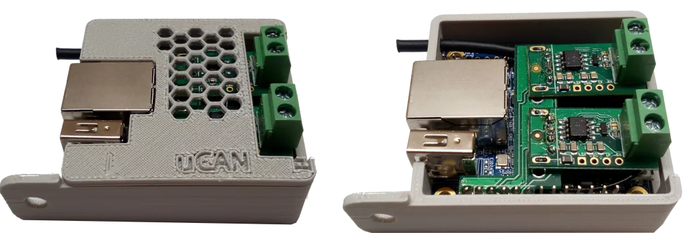
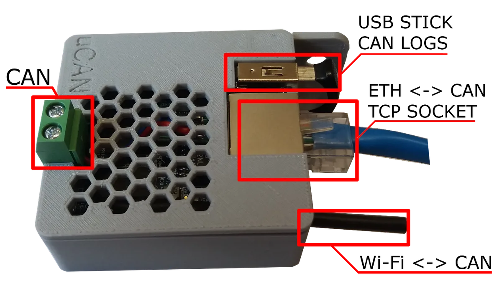
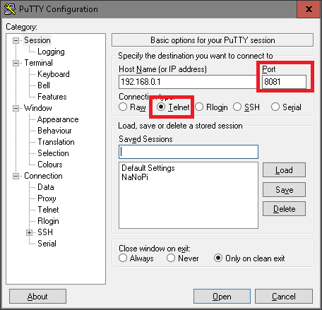

Linux microcomputer with CAN and Ethernet. Remote CAN-to-IP bridge and standalone CAN data logger. SocketCAN compatible.
Buy on Tindie Source on GitHub
Product and its documentation is supplied on an as-is basis and no warranty as to their suitability for any particular purpose is either made or implied. Producer will not accept any claim for damages howsoever arising as a result of use or failure of this product. This product is not intended for use in any medical appliance, device or system in which the failure of the product might reasonably be expected to result in personal injury.
CAN Ethernet Converter (CEC) and CAN logger is single board microcomputer with up to two UCCB or LUC internally connected to USB port. Features of CEC:

CAN Ethernet Converter (CEC) and CAN logger is single board microcomputer with UCCB internally connected to USB port. Features of CEC:
Device has got ready to use SocketCAN user space utilities and tools, see can-utils for more info.
CEC is also supplied with uCANTools web application, tool for CAN data handling, see uCANTools project for more info.

Video about can-utils here, english subtitles included.
Getting started with uCAN CAN Ethernet converter video here, english version.
Device has socketcand program running on ethernet port. Socketcand is a daemon that provides access to CAN interfaces on a machine via a network interface. The communication protocol uses a TCP/IP connection and a specific protocol to transfer CAN frames and control commands. To establish connection use socket client(ex. PuTTy) on configured port.

PuTTy configuration page, remember to set valid port and contention type. After connection you should received <Hi> message. List off all available commands on socketcand project page .
If You connect USB memory stick, device will log frames automatically on it. Frames will be saved in ASCI format. Frames are automatically packet to 100 MB archives, using logrotate utility. Logs can be also downloaded from internal website using UCANTools application.
See uCANTools project
For node-red and MQTT for CAN frames processing tutorial ENG for PL click here
Visit https://github.com/CanEthernetConverter for sources.
CEC Linux distribution comes with many pre-installed applications see list below for details. Tools list:
uCANTools is web application working on port 8080, it has got features like CAN data handling, logs downloading and many more see uCANTools project for more info.
Logroate Linux program is used to handle with logs saved on USB stick. Logroate creates new log files and aggregates them. Log rotate is triggered by cron.hourly task.